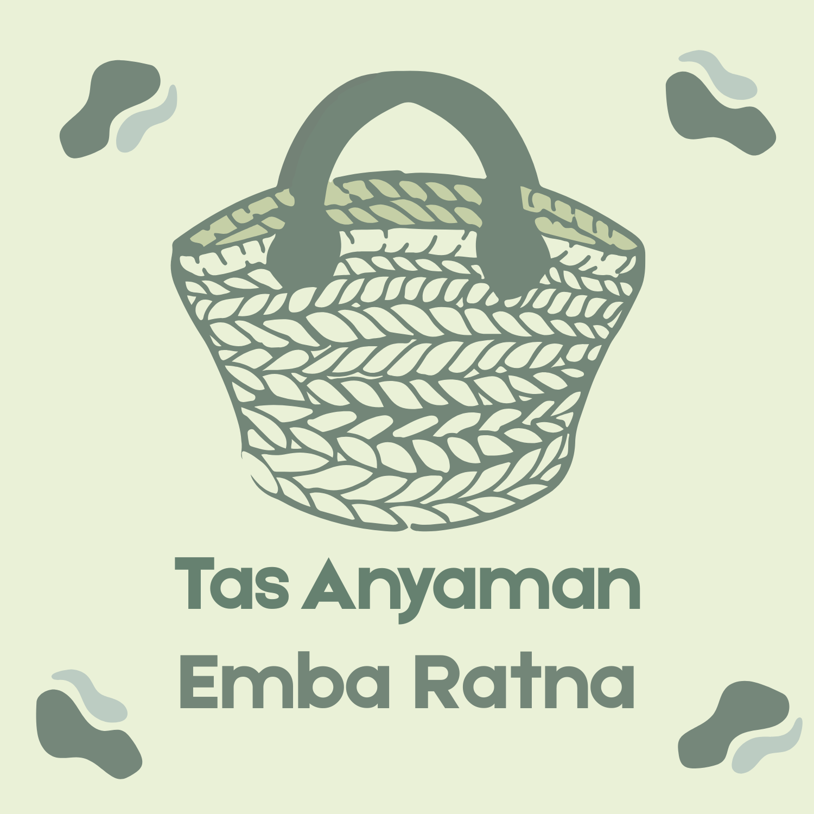

Tas Anyaman Mba Ratna

Tas Anyaman Mba Ratna was founded in 2020 by Dwi Ratnasari. The mission is to preserve and promote traditional, simple weaving techniques that have been passed down from generation to generation.
The woven bags produced are carefully made using traditional weaving methods. This can preserve traditional skills passed down and will continue to develop in the modern world. Working directly with local craftsmen as a sustainable livelihood by providing decent wages as a form of appreciation for the extraordinary artistic talents of the craftsmen.
Our commitment to quality, authenticity, and sustainability enables these woven bag MSMEs to generate trust and customer satisfaction. Currently buying our woven bag catalogs, you are not only buying traditional goods from beautiful hands but also supporting the preservation of sustainable traditional culture and handicrafts.

Cut the plastic roll into sheets carefully and choose good quality to make bags.
Creative craftsmen begin weaving each piece by hand using traditional techniques.
Every product produced is carefully considered to ensure durability and aesthetics.
Each woven bags product undergoes a thorough quality inspection to ensure it meets our high standards before being offered to customers..
Every product undergoes a thorough quality check to ensure it meets our high standards before being offered to customers.